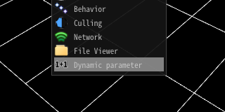
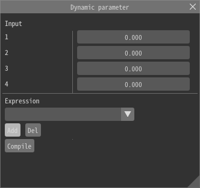
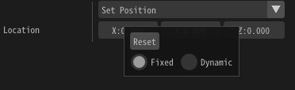
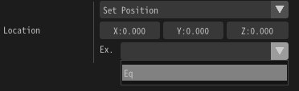

DynamicParameter¶
Overview¶
DynamicParameter specifies a parameter to rewrite refresh (during game) effect parameters during effect playback. It controls parameters with simple code. Parameters can be given externally.
How to use¶
Basic¶
Panel¶
Open the dynamic parameter panel.
Add an expression¶
You can add an expression with the add button. You can specify the name of the expression and the content of the expression.
Write an expression¶
For example, to rewrite the first parameter to 2.0, write as follows.
@O.x = 2.0
After that you press Compile. If no problem exists, OK is displayed. If a problem exists, the cause of error is displayed.
@O.x = 2.0
Apply the expression¶
Right-click on the parameter to which it applies and select Dynamic. Then, a field for selecting the expression is displayed.
Then, select the expression you entered earlier and the expression is applied.
The parameter of the position is (0, 0, 0). But a particle is shown on 2 because the expression changes positions into 2

Functions of an expression¶
Change multiple parameters¶
x, y, z, w, each parameter can be changed. Entering the following changes the values to 2, 3, 4, and 5, respectively. If the destination is a color, x, y, z, w correspond to RGBA.
@O.x = 2.0
@O.y = 3.0
@O.z = 4.0
@O.w = 5.0
Four arithmetic operations¶
Expressions can use arithmetic operations. You can change the priority of the operation with ().
@O.x = (2.0 + 3.0 * 2.0 / 3.0) - 2.0
Parameter¶
Parameters input from the external can be specified from the numeric field on the panel and runtime.
| Parameter | Description |
|---|---|
| @P.x @P.y @P.z @P.w | Parameters before dynamic parameter is applied |
| @In0 @In1 @In2 @In3 | Parameters input from the external |
| @GTime | Current time(s) |
| @PTime | A time since parent particle is generated (s) |
Function¶
The following functions can be used.
| Parameter | Description |
|---|---|
| sin(x) | Return the result of Sine. x is in radians. |
| cos(x) | Return the result of Cosine. x is in radians. |
| rand() | Return the random value |
| rand(x) | Return the random value corresponding with x. If x is same, returned value is same |
| step(edge,x) | Return 1.0 if x is larger than edge. Otherwise return 0. |
Target¶
Dynamic parameter can applies to following parameters.
Spawn Count
Spawn Rate
Initial Delay
Time to live
Position - Fixed, PVA, Easing
Rotation - Fixed, PVA, Easing
Scaling - Fixed, PVA, Easing
Examples¶
LOD¶
The number of generations can be changed externally.
@O.x = @In0 * @P.x
Laser¶
The length of the laser can be changed externally. The size of Z is controlled externally.
@O.z = @In0 * @P.z
Sine Wave¶
Move like a sine wave.
@O.x = sin(@GTime)
@O.y = @GTime